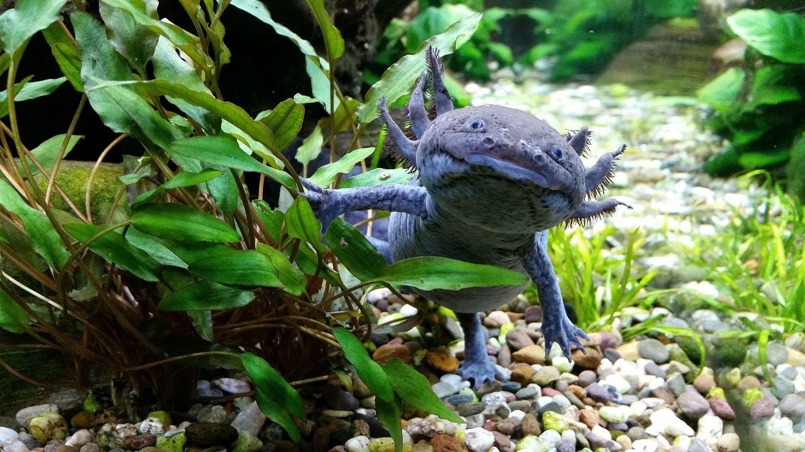
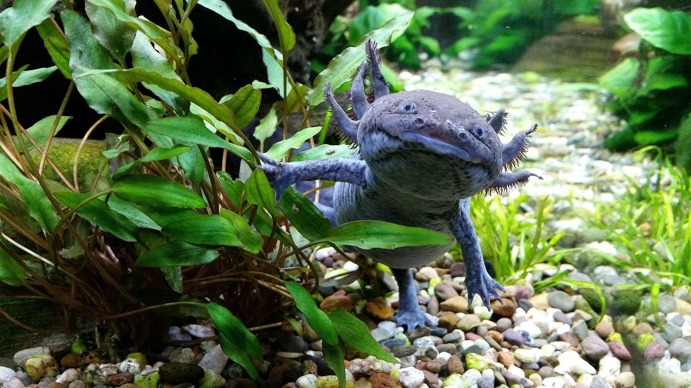
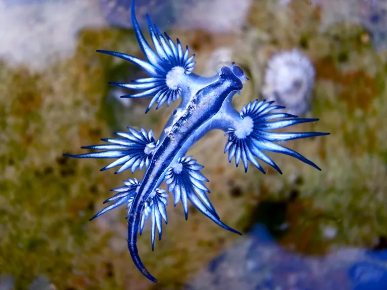
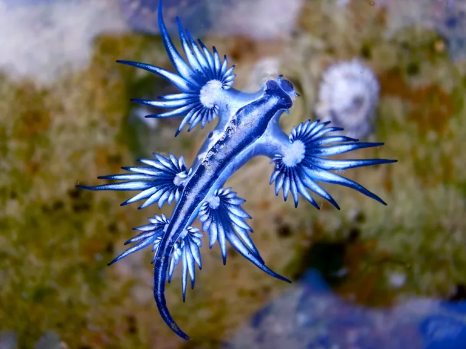
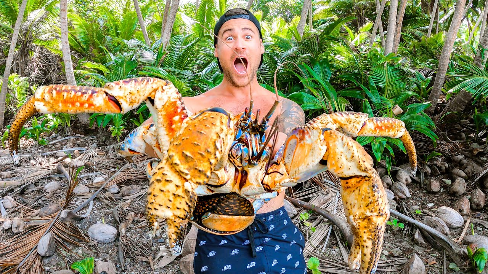
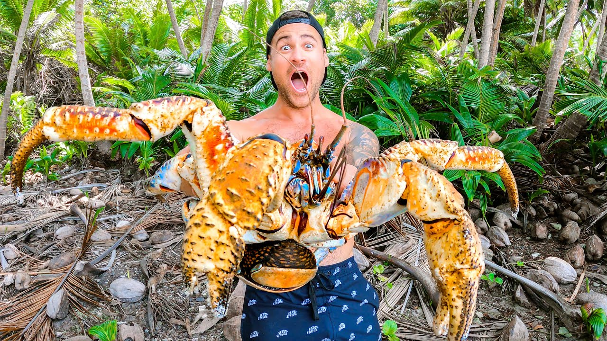
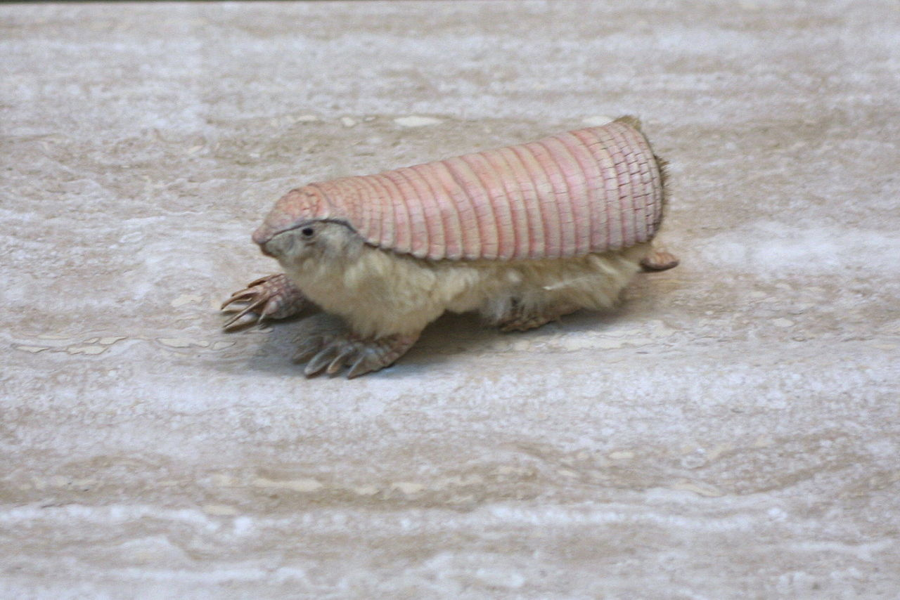
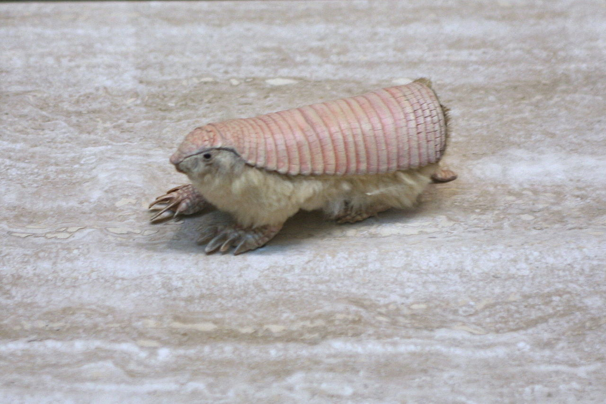

All Beautiful Creatures
Axolotl - Ambystoma mexicanum (link)
Amazonian Royal fly catcher - Onychorhynchus coronatus (link)
Amur Leopard - tbd (link)
Barreleye - Opisthoproctus soleatus (link)
Barreleye - Macropinna microstoma (link)
Blue Dragon - Glaucus atlanticus (link)
Babirusa - tbd (link)
Coconut crab - Birgus latro (link)
Colugo - Galeopterus variegatus (link)
Dugong - Dugong dugon (link)
Echidna - Zaglossus attenboroughi (link)
Fanftooth - Anoplogaster cornuta (link)
Gharial - Gavialis gangeticus (link)
Giant vinegaroon or grampus - Mastigoproctus giganteus (link)
Hispaniolan solenodon - Solenodon paradoxus (link)
Hawaiian Cleaner Wrassee - Labroides phthirophagus (link)
Hummingbird hawk moth - Macroglossum stellatarum (link)
Immortal jellyfish - Turritopsis dohrnii (link)
Immortal jellyfish - Turritopsis nutricula (link)
Janolus - Janolus fuscus (link)
Kinkajou - Potos flavus (link)
Leafhopper - Issus coleoptratus (link)
Lowland Streaked Tenrec - Hemicentetes semispinosus (link)
Marabou stork - Leptoptilos crumenifer (link)
Numbat - Myrmecobius fasciatus (link)
Orchid mantis - Hymenopus coronatus (link)
Oak treehopper - Platycotis vittata (link)
Pink fairy armadillo - Chlamyphorus truncatus (link)
Philippine tarsler - tbd (link)
Quokka - Setonix brachyurus (link)
Red-lipped batfish - Ogcocephalus darwini (link)
Rhino Beetle - tbd (link)
Sarcastic Fringehead - Neoclinus blanchardi (link)
Striped Pyjama Squid - Sepioloidea lineolata (link)
Tasselled wobbegong - Eucrossorhinus dasypogon (link)
Thorny Devil - Moloch horridus (link)
Tube-eye - Stylephorus chordatus (link)
Umbrellabird - Cephalopterus penduliger (link)
Vinegaroons - Family: Thelyphonidae (link)
Viperfish - tbd (link)
Venezuelan Poodle Moth - tbd (link)
Walking Catfish - Clarias batrachus (link)
Xoloitzcuintle - Canis lupus familiaris (link)
Yeti. - tbd (link)
Zorilla - Ictonyx striatus (link)
 

 

 



.jpg)


 
